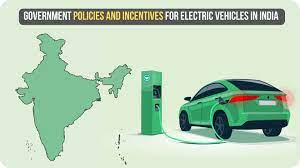

The Indian government has implemented a range of policies and initiatives to promote the adoption of electric vehicles (EVs) and to develop the EV ecosystem. Here is an overview of some key initiatives and policies:
Aims to achieve significant EV penetration by 2030 with specific market share targets for private cars, commercial cars, buses, and two- and three-wheelers. It emphasizes demand creation, domestic manufacturing, R&D, and charging infrastructure.
Reduced the Goods and Services Tax (GST) on EVs from 12% to 5% to make them more affordable.
Promotes local production of EV components to boost domestic manufacturing and reduce import dependence.
Various states offer incentives like subsidies, exemptions, and benefits to EV manufacturers to stimulate production and adoption.
Some states provide tax exemptions, reduced road tax, and registration fee waivers to EV buyers to encourage adoption.
Several states have introduced policies to promote public charging infrastructure for EVs.
Includes hydrogen-powered fuel cell electric vehicles (FCEVs) as part of India's green mobility initiative.
Promotes the replacement of old, polluting vehicles with newer and more eco-friendly options, including EVs.
The government offers incentives and grants for research organizations and businesses to drive innovation in EV technologies.
NITI Aayog, a policy think tank, plays a role in creating frameworks and strategies to accelerate EV adoption and reduce carbon emissions.
Focuses on promoting sustainable urban transportation, including electric mobility solutions, in selected cities.
Incentivize the adoption of electric buses and taxis to electrify public transportation and cab services.
Encourages the use of electric buses and other non-polluting vehicles for urban transportation, promoting green mobility solutions.
These policies and initiatives collectively aim to encourage EV adoption, boost local manufacturing, and develop charging infrastructure. Their goal is to mitigate environmental pollution and work toward a more sustainable and eco-friendly future. For the most up-to-date and detailed information, it's advisable to consult official government sources and relevant authorities in India.